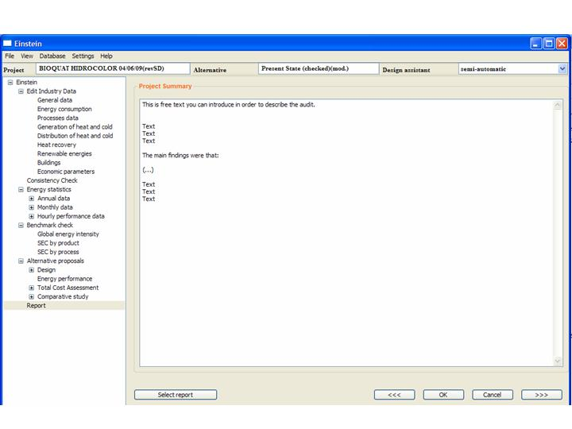
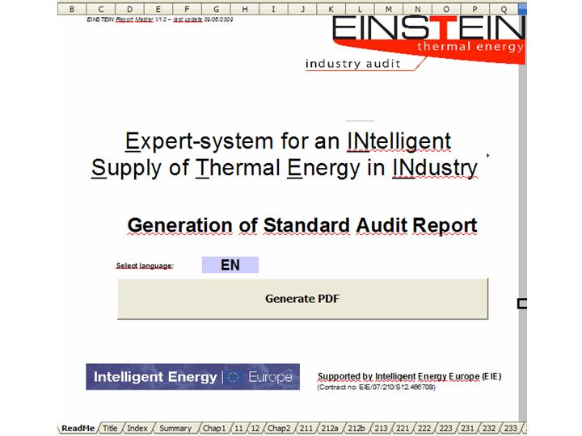

User Manual
Chapter 13: Report Generation
13.1 Creating the report
13.2 Editing the report and pdf-generation
13.3 Creating your own master report
13.1 Creating the report
A standard audit report can be created automatically from the tool using the option "Report" from the EINSTEIN main menu tree.

Figure 13.1 Menu for report generation from EINSTEIN
Step
1. Introduce the text for the report summary in the text field (e.g.
what did you analyse, what were the main outcomes and conclusions)
Step 2. Select the Master document for the report (button "Select Report")
The default report master document is EINSTEIN_Report_MASTER_Vnn.nn.ods that can be found within the folder einstein/reports.
You can also create your own master documents (see below).
The report generation for projects with several alternative proposals may take some time (several minutes).
The report created by the tool (default name: NewReport.ods) is in
OpenOffice spreadsheet format. OpenOffice can be downloaded for
free on www.openoffice.org.
13.2 Editing the report and generation of PDF
Once installed OpenOffice on your computer, you can edit the report (e.g. adding / changing text, graphics, etc.).

Figure 13.2 "ReadMe" - sheet of the EINSTEIN report with the menu for language selection and pdf generation
Language
The
language of the report can be switched selecting the appropriate
language on the "ReadMe" sheet of the report. This will change
automatically all the STANDARD text. But take care: text that has been
introduced or modified manually by the user is NOT translated !!!
PDF - Generation
The
pdf - generation is activated by pressing the button "Generate PDF" on
the "ReadMe" sheet of the report (Take care: this function works only
if the execution of macros in the OpenOffice spreadsheet is not blocked
by your security settings).
Alternatively you can create a pdf also by the OpenOffice menu option File -> Export as PDF.
13.3 Creating your own master document
You can create your own report master document from a copy of the original master.
The
following changes in the document can easily be done by yourself and
are supported without need of any further modifications:
- Change of images (e.g. adding your own logo or pictures to the document)
- Change of the layout (font style & size, cell colours, etc.)
- Adding
or deleting pages (take care: when deleting pages then links to those
pages on the index-pages should be eliminated, too).
More
complex changes within the report master are possible, but for this you
should best contact with the EINSTEIN developers in order to obtain
information on the communication protocol between EINSTEIN and the
OpenOffice spreadsheets.